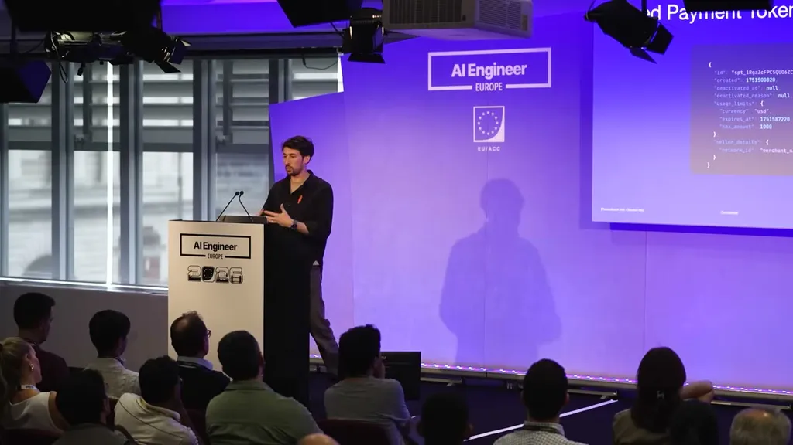
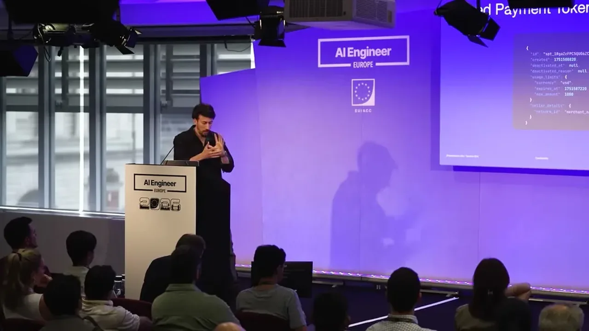
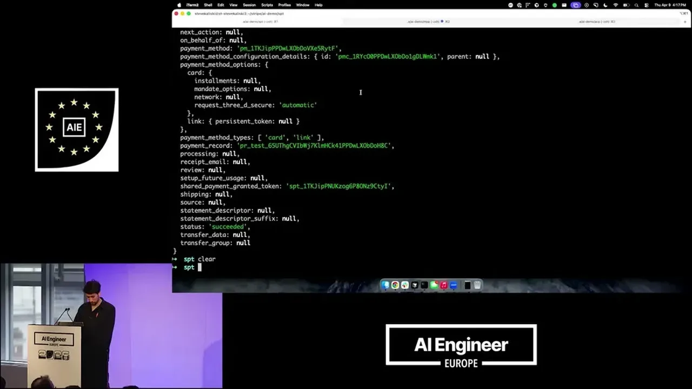
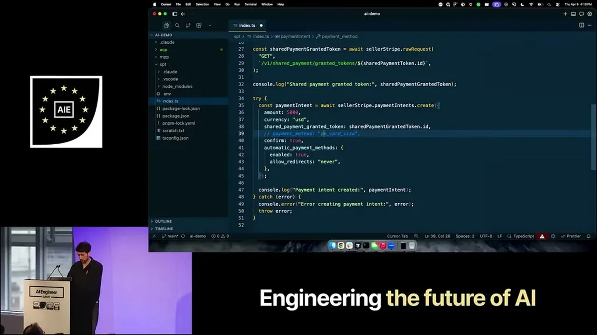
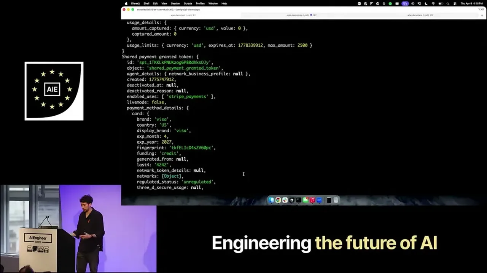
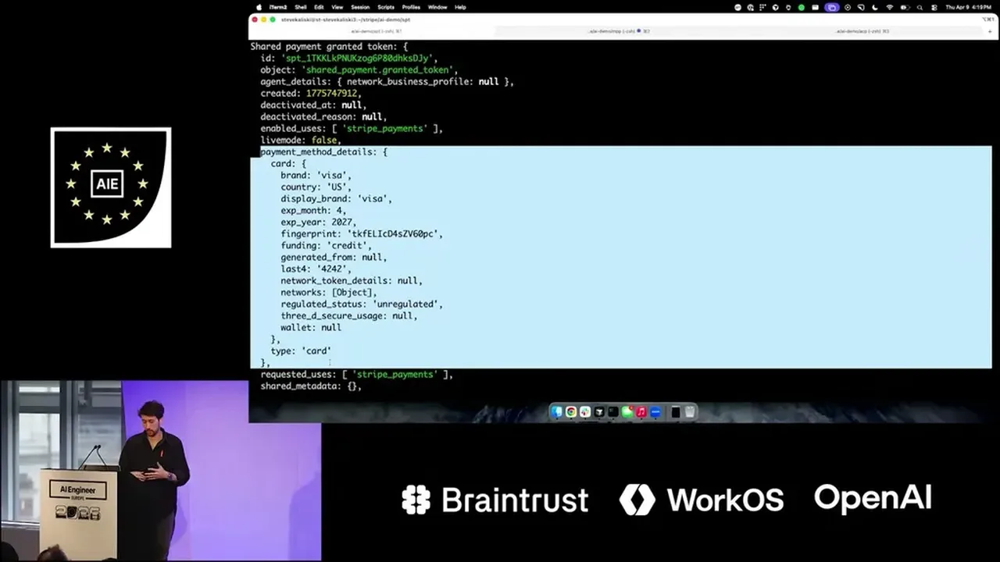
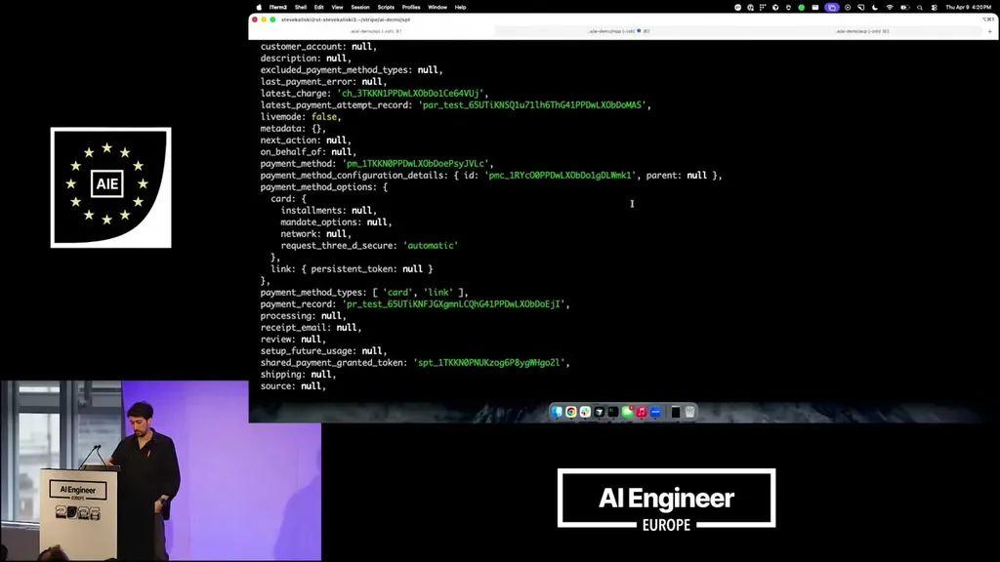

Building safe Payment Infrastructure for the autonomous economy
If you only read one thing
- Agents already spend money via their token/subscription usage; Stripe's goal is letting them spend with other businesses safely, since discovery benefits from non-determinism but payments require determinism (c1, c3).
- The core failure modes are buying from the wrong place, the wrong thing, the wrong amount, or with the wrong credential; shared payment tokens fix this by scoping a credential's spend limit, currency, time window, and seller, enforced by Stripe (c2, c4, c5).
- Two further protocols close the loop: the machine payments protocol lets tool/API calls return an HTTP 402 with a payable credential, and the agentic commerce protocol (built with OpenAI) standardizes checkout state so agents don't misread cart details (c6, c7).
The speaker argues agents already spend money today, just proxied through subscriptions or per-token billing to their LLM provider rather than directly with other businesses. The talk's organizing principle is that discovery and exploration should benefit from an LLM's non-determinism, while credentials, payments, and checkout require determinism.
“agents are already economic actors, right? They have their own currency and tokens.”
▶ watch at 01:33“credentials, payments, and checkout require determinism. So not just benefit from it, but require it.”
▶ watch at 01:02
The speaker lists four concrete failure modes for agent commerce: buying from the wrong place (fake or lookalike domains), the wrong thing, the wrong amount (price drift, currency/tax miscalculation), or using the wrong credential. The baseline approach of letting an agent operate a browser and paste a card number like a human is described as slow, hard to observe, and exposed to all four failure modes.
“I can buy from the wrong place. I can buy the wrong thing. I can spend the wrong amount. I can use the wrong credential.”
▶ watch at 02:35
Stripe's shared payment token lets an agent collect a payment credential and share it with a seller across many payment method types, with usage limits encoded for currency, amount, time window, and a specific seller, enforced by Stripe rather than trusted to the seller. In a live demo, a $50 charge attempt against a token capped at $25 was rejected by Stripe before a lower-amount charge succeeded.
“I can apply usage limits to specific currencies, to amounts, for time, and a particular seller.”
▶ watch at 05:15“the request amount, which was $50, is greater than the amount that was uh mandated”
▶ watch at 07:49
Built with Tempo, the machine payments protocol lets an HTTP endpoint signal that payment is required by returning a 402 status code along with an encoded payload describing what is being bought and how to pay, which the agent can then settle (demoed on the Tempo blockchain).
“we want to be able to communicate the need to pay um in those HP requests by returning a 402 status code”
▶ watch at 09:20
Built with OpenAI, the agentic commerce protocol (ACP) is a standard set of APIs and objects describing checkout state (line items, tax, shipping options) so an agent doesn't have to scrape a webpage and risk misrelaying purchase details to the human buyer. The speaker's closing recommendation is that businesses should expose agent-friendly APIs rather than only web UIs, to maximize deterministic (rather than scraped) interactions.
“what we built with Open AI being the agent to commerce protocol is a standard set of APIs and objects that can explain how checkouts work across the web”
▶ watch at 11:57“if we only expose you web UIs or or or applications like that, um we increase the likelihood of non, you know, the non-determinism interacting with our businesses”
▶ watch at 15:02“discovery we should keep with non-determinism that's perfect. Payments and checkout and credentials we want to shift towards exclusively deterministic.”
▶ watch at 15:33
Commentary (ours)
The framing of 'discovery stays non-deterministic, payments become deterministic' is a clean design principle that likely generalizes past commerce to any agent action with real-world consequences (booking, filing, sending) -- worth watching whether other infra providers converge on the same split (ours).










Underlying detail — every claim, typed and timestamped (9)
| Stance | Claim | t |
|---|---|---|
| asserts | Agents are already economic actors because they spend money via their own tokens/currency, just proxied through subscriptions to their LLM provider. | 01:33 |
| warns | The main risks of letting an agent transact are buying from the wrong place, the wrong thing, spending the wrong amount, or using the wrong credential. | 02:35 |
| asserts | Discovery and exploration benefit from an LLM's non-determinism, but credentials, payments, and checkout require determinism. | 01:02 |
| asserts | Shared payment tokens let an agent apply usage limits on currency, amount, time, and a specific seller to a payment credential. | 05:15 |
| asserts | In a live demo, Stripe rejected a $50 charge attempt against a shared payment token that was capped at $25. | 07:49 |
| asserts | The machine payments protocol communicates that payment is needed for a tool/API call by returning an HTTP 402 status code with a payable credential. | 09:20 |
| asserts | The agentic commerce protocol, built with OpenAI, standardizes the APIs and objects that describe how checkout works across the web. | 11:57 |
| warns | Exposing only web UIs (rather than agent-friendly APIs) to agents increases the risk of non-deterministic errors when interacting with a business. | 15:02 |
| recommends | Businesses should keep agent discovery non-deterministic but shift payments, checkout, and credentials to be exclusively deterministic. | 15:33 |
Machine-readable copy embedded in this page (script#ontology) and in the corpus ontology.